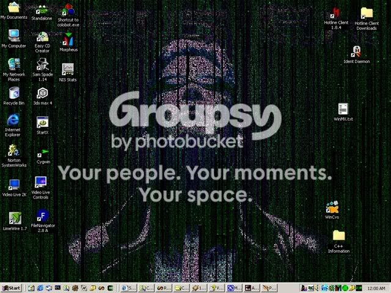

#2896 1 2005-05-18T02:10:12Z Keron Cyst By the end of today I shall have used the
MLA Auto-Generator three times ('ey, that's my
Ripway account; download sparingly). Anyone who is having trouble forming bibliography/work citations at the end of his reports, try this awesome utility

It automatically generates the citation code for books (including multiple authors), websites, encyclopedias, periodicals, legal documents, and more!

#67619 2 2005-05-18T04:31:48Z LittleViking #67928 3 2005-05-19T13:55:03Z JeR(K) OMG LV..
I have all those apps.
Hey, who updated the fast reply?
#68303 4 2005-05-21T13:16:47Z astro Ditto, except for AVG - I use
Avast.
I would add:
CCleaner
ConTEXT
The GIMP#69235 5 2005-05-24T23:40:57Z Keron Cyst ... who updated the fast reply?
Who else aside from yours truly?
") TUGZip
TUGZip >
WinRar >
WinZip > Standard Windows extractor
#69240 6 2005-05-25T00:21:03Z great_sea Bazooka Scanner is one of the best spyware utilities I have ever found. As long as you don't mind getting your hands dirty, it provides very detailed instructions on removing all sorts of adware and spyware. Actually, kephyr.com has some other cool free software and utilities. Go check it out.
#69277 7 2005-05-25T02:10:18Z TornadoTK Adobe Photoshop CS2 - We all know what this is.
Paint - Gotta love it.
Oh, and have you guys heard of N? It's a pretty cool game. You should try it if you're into ball-bustingly hard platforming games.
#69356 8 2005-05-25T07:01:14Z astro I'll add
IZArc for zipping and
HTTrack for website downloading.
#69398 9 2005-05-25T15:02:04Z Keron Cyst ... Paint - Gotta love it....
I'm talking about programs we don't already have...

#69407 10 2005-05-25T15:59:49Z JeR(K) TUGZip > WinRar > WinZip > Standard Windows extractor
NO!
Powerarchiver is the masssst0rr!!
#69459 11 2005-05-25T19:44:33Z Keron Cyst And that co$ts...

#69885 12 2005-05-27T10:42:41Z astro And that co$ts...
So? Does something have to be free to be
useful?
#69923 13 2005-05-27T13:16:02Z JeR(K) It's just as much shareware as WinZip is..

#79024 14 2005-06-27T20:04:56Z Keron Cyst I never said I used either.
TUGZip &
WinRar (at least, the beta version

) are totally free!
EDIT, and pseudobump Here's a nice
Typing Test app. I found.

#79026 15 2005-06-27T21:06:02Z wedgie keron that typing app doesent seem to really work properly for me. anything i might be doing wrong?
#79043 16 2005-06-27T21:49:33Z 7! YOu guys still use Winzip and WinRAR? Get ZIpGenius, it unziips so many files, (RAR, zip, 7z, and more). And it's free.
zipgenius
Audacity is a kick @$$ sound utility. YOu can record sounds with a microphone, change pitch, tempo, speed, there are "phaser" and "wahwah" effects, amplify, and more. Free, too.
audacity
I downloaded The GIMP today, it seems nice, (I made my siggy with it, no idea how to get rid of the flashing).
AIM, (no comment),
Firefox Spybot- S&D, and MS Anti SPyware.
Then there's Icy Tower, go to
here#79046 17 2005-06-27T21:53:51Z trib4lmaniac ZipGenuis is no good

Jack of all trades, master of none.
#79093 18 2005-06-27T23:33:46Z 7! Works perfectly for me
#79119 19 2005-06-28T01:50:26Z Keron Cyst ... that typing app doesent seem to really work properly for me....
Bring it up, type something, and hit Enter.
Spybot S-D is terrible, but that's just me.
... YOu can record sounds with a microphone...
... with
Sound Recorder, and that's by crappy Windows
#79120 20 2005-06-28T02:04:26Z LittleViking Lies! Spybot is good.
#79126 21 2005-06-28T02:42:51Z trib4lmaniac I love spybot. But only because it says I'm clean
#79133 22 2005-06-28T03:24:53Z Patrick I love spybot. But only because it says I'm clean
Heheh, me too
Let's see....
Gaim
Mozilla Firefox
Mozilla Thunderbird
Quintessential Player
OpenOffice.org
Filezilla
And now I am a user of ConTEXT
#79135 23 2005-06-28T03:33:03Z jflash Let's see, ooohhhh, tough one...
1. For you beta testers, or anyone who knows what it means, DPA1, anyone else, it's basically Mozilla Firefox.
2. OpenOffice.org
3. Picasa (photo organizer by Google)
4. Google Desktop Search
5. Windows Media Player
6. Spybot S-D
7. Ad-Aware
8. Microsoft Anti-Spyware
9. Gmail (not technically an app, but I love it anyway. If you want an invite and don't have one, PM me)
10. This great game I found called N. Anyone ever heard of it? (Thanks, TornadoTK for the idea for that (attempted) witty remark).
EDIT: How could I have missed Mozilla Thunderbird?! Best email app ever created, if you ask me. *hand slaps forehead*
#79139 24 2005-06-28T04:13:39Z Patrick DPA1
Deer Park Alpha 1
I read that it should implement a few CSS goodies
#79266 25 2005-06-28T17:38:26Z jflash Yup. I was wondering if anyone else had heard of it.

#79279 26 2005-06-28T18:06:37Z trib4lmaniac Yup. I was wondering if anyone else had heard of it.
I'm using it
#79370 27 2005-06-28T22:41:08Z jflash It what? DPA1?
#79371 28 2005-06-28T22:46:52Z trib4lmaniac Yeah.
#79376 29 2005-06-28T22:54:08Z jflash Cool! That makes 3 people!
#79433 30 2005-06-29T01:42:16Z Keron Cyst Lies! Spybot is good.
Because you have an inferior XP that's always invaded by junk!
My ME doesn't need crap like that

But seriously,
Spybot crashes on me 75% of the time during scans. And I haven't found anything unwanted that
Ad-aware &
AVG can't detect
#79437 31 2005-06-29T01:50:58Z trib4lmaniac Spybot crashes on me 75% of the time during scans.
That's because your using ME
#79446 32 2005-06-29T02:33:34Z 7! Spybot never crashes on my Windows ME...strange
#79496 33 2005-06-29T10:41:25Z astro Enough with the Me bashing. I mean, it's better than 98 SE.
#79506 34 2005-06-29T10:59:23Z trib4lmaniac Enough with the Me bashing. I mean, it's better than 98 SE.
It's a tough call

#79541 35 2005-06-29T11:46:31Z astro No it isn't... Me looks cooler
#79547 36 2005-06-29T11:55:26Z Daddaluma That typing speed tester thing doesn't work for me either.
When I push enter it just closes on me.
#79550 37 2005-06-29T11:57:20Z astro While I'm in this thread, does anyone know of a good programing for keeping notes and that kind of thing? At the moment I just use a .txt file, but it's hard to keep it organised.
#80393 38 2005-07-01T23:39:52Z Jesse lol I just use txt files as well, I think I've got a few hundred of them. But if you want more organisation... well I can't really think of anything. Maybe Microsoft Word or something.
Anyway, here's a neat program I discovered a while ago, called Z Matrix. It takes your desktop image, and transforms it into a mass of scrolling characters. Looks very cool, check out this screenshot:

You can get the program for free
here.
And just to point out, I only just discovered it's only for pc, and not mac. Sorry mac users
#80424 39 2005-07-02T03:00:30Z Red Reamer That really is so cool. And uses up so much proccessing power. But It's still cool.
Check this out.

#81216 40 2005-07-05T09:28:50Z Jesse Awesome. Awesome to the max.
Yeh it does take a lot of computing power to run, but then so does N, right? I use it exclusively as a screensaver
#81901 41 2005-07-08T11:00:30Z Red Reamer Actually its not that much. Theres no lag when i use it.
#81929 42 2005-07-08T13:54:34Z 7! doesn't take more than 5% of processing power for me....
#82203 43 2005-07-09T03:11:17Z jflash I have to add Google Earth. It's not particularly useful, but it is really cool to see the satellite imagery!
#84463 44 2005-07-18T21:31:35Z coffeefreak I'm using...
ZoneAlarm Security Suite (Expen$ive...):
Flash MX 2004 Pro ($$$)
Internet Explorer 6

Windows XP Home Edition FI
PhotoImpression
MSN Messenger 7
SiSoft Sandra Professional 2005 ($$$)
MS Paint
 Winamp
Winamp
As Maestro said, does something have to be free to be useful?
#107082 45 2005-10-10T18:16:55Z macaddict_17 Hmm, would it be unwise to post Mac-only stuff? Oh well.
iTunes
iMovie
Folder icon Maker
Jasc Paint Shop Pro
3-D Space VHF
Ragdoll masters
Safari
Pixadex
Candy Bar.
Thats all for now.
#107089 46 2005-10-10T18:32:05Z 7! I use
Windows XP Media Center Edition,
Nero 6 Burning Rom+Vision Express
UltraISO
Microsoft Office XP, (2003 doesn't work for me)
WMP 10
VLC Media Player
iTunes
Media Center 2005, (embedded with XP MCE)
Firefox 1.0.7
Netscape 4.78
IE 7
Limewire Pro 4.9.30
Paint
Adobe Photoshop CS2+Creative Suite CS2
Audacity
X Chat
ZOnealarm Free
AVG Free
Spybot S&D
VMWare
Partition Magic 8.05
AIM
BitComet
DAEMON Tools, (Virtual drive utility)
Windows 98 SE, (on VMWare, 10gb hard drive,m 256mb RAM)
Trillian
Netscape 4.78
IE 6
Firefox 1.0.7
M$ Office XP
Basically the same software I have for XP
Exceptions: No creative suite and only photoshop 7
no partition magic, vmware, x-chat, iTUnes, and no WMP 10.
Great OS though.
#110174 47 2005-10-24T12:29:39Z Guest (guest) Mac apps i use, all freeware, except for the ones where ive stated what i payed for them...
iTunes - duh
Smultron - Syntax highliting text editor with a built in code snippet holding thingumy.
FlipMovie - Animation program
Seashore - Based on the Gimp, but doesnt require the X11 thingy
ThinkFree Office - Almost exactly like M$ Office but around £40 if i remember correctly.
Nvu - Streets ahead of MS Frontpage, and free.
G++ - Unix based C++ compiler
AppleScript Studio and XCode Tools - A helluva lot of develeper tools that come with Macs these days.
I'm saving up for Flash MX 2004. I found the "Academic Edition" on Ebay for around £80. Not sure though.
#110176 48 2005-10-24T12:32:16Z tOBY Mac apps i use, all freeware, except for the ones where ive stated what i payed for them...
iTunes - duh
Smultron - Syntax highliting text editor with a built in code snippet holding thingumy.
FlipMovie - Animation program
Seashore - Based on the Gimp, but doesnt require the X11 thingy
ThinkFree Office - Almost exactly like M$ Office but around £40 if i remember correctly.
Nvu - Streets ahead of MS Frontpage, and free.
G++ - Unix based C++ compiler
AppleScript Studio and XCode Tools - A helluva lot of develeper tools that come with Macs these days.
I'm saving up for Flash MX 2004. I found the "Academic Edition" on Ebay for around £80. Not sure though.
Woah, sorry. That was me.

EDIT: For all you Windows users out there who dream of making stick-man animations but are too lazy,
Pivot Stick Figure Animator is the one Windows App i miss.
#113263 49 2005-11-08T19:49:21Z spect SequoiaView. Really nice program for finding big files. See for yourself.
#113268 50 2005-11-08T20:21:35Z 7! Woot. I got a 1GB stick of RAM. 1.5GB RAM.
#116185 51 2005-11-19T15:56:10Z Adam77 Snagit 7
Camtasia 3
#116187 52 2005-11-19T16:00:45Z glenno14 Konfabulator is pretty good. Alot of people seemed to start using it when I posted a link to it in the post your desktop thread....
#116272 53 2005-11-20T01:50:15Z astro Woot. I got a 1GB stick of RAM. 1.5GB RAM.
That doesn't seem like a useful app to me.
#116286 54 2005-11-20T02:20:52Z 7! Useful for running 5 instances of N at once.
#116295 55 2005-11-20T02:47:29Z Atilla It is, however, not an application. It is a piece of hardware.
#132689 56 2006-01-15T19:53:34Z LoD Some weeks ago I found
Programmers Notepad. It's free, open source, and very mighty.
Also very useful for programmers is the
Nullsoft Scriptable Install System. It creates installers for your progs (including start menu shortcuts, component selection, et cetera).
#133313 57 2006-01-18T01:56:10Z PCer How do I uninstall the matrix thing?
#135218 58 2006-01-23T22:32:00Z smartalco itunes
photoshop
blender (
www.blender.org)
flash
limewire
adium
N
firefox
mail
VLC
garage band
safari
sound studio
thats about it...
#135670 59 2006-01-25T04:52:05Z zombieKAT #163359 60 2006-04-09T17:51:50Z ZZ9 HTML-Kit is quite useful for web devolopers
#163450 61 2006-04-10T00:04:56Z smartalco few more...
xcode - any mac programmer needs it
thunderbird - a email program from the makers of firefox
x-chat aqua - a free (i think) irc client for mac
terminal - on any unix system, for those who dont know its kinda like using the command prompt in windows
#163573 62 2006-04-10T09:02:40Z ZZ9 Limewire
Universe - I used it to make my sig banner
#179442 63 2006-05-23T17:19:54Z JEDICOMMANDO Note: I have all of these!
Limewire PRO
N
Flash MX
Coldfusion Server
Norton Internt Security
3d Max (3d game maker)
RPG maker XP
Windows XP profesional
Dreamweaver
Paint shop pro (latest version)
Macromedia Fireworks
itunes
Adobe Acrobat Reader
SBC global
Fontographer
Game Editor
Game Maker
Wi-fi Max
Action Replay
McAfee Security Center
Recycle Bin
Quicktime
HP stuff
N starter
N tile inverter
N tile manager
N level Data
N art maker
N maze maker
Word perfect
Bookmark organizer (I made this one)
Desktop Organizer
Python (latest)
Windows Media Player
Web suite
Real Player
Flash Player
Paint
Sol editor (dont use)
SOS (you will never know what that is!)
Animation Shop 3
There is more. I'll post 'em later.
MAC SUCKS!!!!!!!!!!
#179473 64 2006-05-23T17:57:33Z Luminaflare they may suck but not as much as windows AND i use windows
#179529 65 2006-05-23T19:59:21Z JEDICOMMANDO not true. Windows is 45% better than Mac.
#185520 66 2006-06-06T20:05:58Z Britannia All the programs I use the most, and think are the best of their kind...
Adobe After Effects 7.0 Professional
Adobe Photoshop CS2 9
Aone Ultra Video Splitter
CCleaner
Google Desktop
Google Earth
Google Video
Macromedia Dreamweaver 8
Macromedia Flash 8 Professional
Macromedia Fireworks 8
Macromedia Flash 8 Video Encoder
Macromedia Contribute 3
Macromedia Captivate
Macromedia Director MX 2004
Microsoft Movie Maker 2
Microsoft Windows Defender (Beta 2)
TopDesk
Exclusive Betas only I can get as I'm a Microsoft Beta Tester...
")
I'm afraid you can't download these.....
Microsoft Expression Web Designer (Beta 1)
Microsoft Office Professional 2007 (Vista Version, Beta 2)
Microsoft Windows Vista OS (Beta 2)
There we go... havn't got time to put links in now, might do it tomorrow...
#185537 67 2006-06-06T20:42:12Z Luminaflare how do you set up thunder bird?
#185804 68 2006-06-07T13:35:45Z astro Microsoft Expression Web Designer (Beta 1)
Microsoft Office Professional 2007 (Vista Version, Beta 2)
Microsoft Windows Vista OS (Beta 2)
Nuh-uh. Anyone can sign up for Office.
#185809 69 2006-06-07T13:42:28Z Britannia Yes I know, but not the Professional Vista Version...
or for that matter any of the other betas I mentioned...
maestro, I do know what I'm talking about...
#185819 70 2006-06-07T14:02:53Z astro So, how does the Professional Vista Version differ from the standard Professional version?
#185821 71 2006-06-07T14:07:36Z Britannia It only works on Vista OS Beta 2.
Has special features only Vista can make possible.
'Vista' title on start up.
Interacts with other Microsoft programs through a Vista Bridge inbuilt into it.
All its programs (Word, Excel, etc) have a bridge to interact through.
Satisfied with my answer, or still just being big-headed about it all
?
EDIT: Your just mad because I am part of Microsoft Beta team...
#185828 72 2006-06-07T14:23:18Z astro Bigheaded? Ha. You're the one who's sticking "I'm a Microsoft Beta Tester and you aren't" into every second post.
I am satisfied with the answer, I guess. I'd rather have a version that can work on XP than a version that only works on Vista, though...
#185831 73 2006-06-07T14:35:26Z Britannia Okay, I'm big-headed as well,
but this will be completely different to the old Offices.
Take a look at this to understand what I mean...

Thanks for arguing though (great fun
!), this is my first and hopefully my last agruement...
BWD
#189195 74 2006-06-14T04:32:32Z astro It is completely different to the old offices, but the Vista version isn't /that/ different to the XP version.
#189356 75 2006-06-14T15:36:56Z 7! See for yourself.
Attachment (lost): post-5-1150299416.jpg
#189753 76 2006-06-15T08:09:40Z astro BritanniaWD had already posted a screenshot of it for anyone who didn't know.
#189803 77 2006-06-15T12:38:31Z 7! I meant the differences between teh Vista and XP version.
#189806 78 2006-06-15T12:42:41Z astro Oh? I don't see any difference there.
#189807 79 2006-06-15T12:51:56Z Britannia Sorry to butt in...
but I also am showing the XP version as I am not allowed to show people the Vista version publicly yet. I just thought I would post a picture of the XP version instead. My mistake that I didn't say that in the first place....

#189860 80 2006-06-15T16:24:36Z top predator from where can i get n maze
#194659 81 2006-06-26T05:40:29Z Keron Cyst ObjectDock is an amazing app. I love it already and have only had it for a few minutes.
#199328 82 2006-07-05T21:04:34Z glenno14 Anyone know of something like Microsoft Word? My microsoft word is like, 2 versions old and well, its terrible.
Is that OpenOffice thing anything like it?
EDIT: Nevermind. LittleViking answered my question.
#199743 83 2006-07-07T00:37:29Z Homestar Runner Does anyone know of a free Image Capture program? This maybe a very stupid question but I've used google and didn't get anything.... well nothing pleasant anyway. Also microsoft Powerpoint is pretty fun/useful. Though you have to buy microsoft Office which costs a lot.
#203956 84 2006-07-18T03:24:30Z smartalco how do you set up thunder bird?
you have to look up how depending on which service you have, g-mail has a help page somewhere that tells how to set up several email clients including thunderbird
[off-topic] can i start a new mac vs winblows thread in serious discussion, the other one is long dead and i feel like argueing a bunch...[/off-topic0
#207121 85 2006-07-25T19:21:18Z 7! Smartalco, if you want to start a Windows vs. Mac war, (like me and Templex did on the IRC back in the day), do it in the B&T like you said.
On topic.
NASA World Wind
It's a lot like Google Earth, but allows you to see the moon and Mars as well.
#211028 86 2006-08-03T18:47:15Z jagguthekingh there is one app that u gotta have if you have windows. its the
Windows Vista Upgrade Advisor. its pretty cool cuz you can see if your computer is ready for Windows Vista Home Basic, Home Premium, Ultimate, or Buisness. And if its not, it tells you what you need to do. Search for the name at microsoft.com. google desktop is awesome too. Once its done indexing your computer, it can search the entire hard drive in seconds, using the technology that they use to search their servers. Objectdock is awesome, but if you want a more mack-like dock, get aquadock. Both of those can be found by searching download.com. Trillian is good for encorporating AIM, ICQ, and yahoo into one client. google it.another thing to google is Belarc Advisor. It scans your computer and tells you everything about it, and the whole thing takes about 30 seconds. I have alot more, but i gotta go.
wow that took awhile

#211065 87 2006-08-03T20:09:14Z 7! IU think most of us have AIM/ICQ/MSN, and know about Trillian/Gaim. I prefer AIM, but if my sister's online, I have Trillian installed as a backup for me.
That Vista Advisor=pretty cool. Apparently I need a better video card though...NVIDIA FX5200xt.
#211066 88 2006-08-03T20:09:27Z Keron Cyst @Homestar Runner: what for? Use Prt/Scr, next to F12. It copies whatever is on the monitor onto your clipboard. (Use Alt in conjunction to capture only the active window for non-fullscreen shots.) I realize some games disable this function for whatever reason, but still I find any external Image Capture program useless. Just look in their readmes, look for an empty Screenshots directory in the game's directory and smack all the F# keys to see if it'll send a graphic there, or ask the company how to take a screenshot in-game if Prt/Scr doesn't work.
Wow, that took a minute
#211794 89 2006-08-05T15:05:54Z jagguthekingh Wow, that took a minute
yea really funny, Keron
. another good app is the Windows defender Beta, off of microsoft.com. its pretty good spyware protection. so is AVG free edition. a free internet security suite, sort of.
EDIT: sorry about that. its gone.
#211803 90 2006-08-05T15:42:28Z Keron Cyst ... I'm sure many do. But I also see that you most likely haven't read the

, either, unless you are just declaring it is a useful app.
#211816 91 2006-08-05T16:00:34Z astro lol bittorrent lets u download music and games and apps whitout buying them!!!!! its totally awesum for illegal shizzle.
#212488 92 2006-08-07T02:46:12Z Homestar Runner @Homestar Runner: what for? Use Prt/Scr, next to F12. It copies whatever is on the monitor onto your clipboard. (Use Alt in conjunction to capture only the active window for non-fullscreen shots.) I realize some games disable this function for whatever reason, but still I find any external Image Capture program useless. Just look in their readmes, look for an empty Screenshots directory in the game's directory and smack all the F# keys to see if it'll send a graphic there, or ask the company how to take a screenshot in-game if Prt/Scr doesn't work.
Wow, that took a minute
Print Scrn doesn't work for me. Nothing happens. But I found a free image capture... er screen capture. Download it now!
HotScreen It pops up when you press print scrn.
#212490 93 2006-08-07T02:54:18Z Ngaged No no no.
Press Print Screen.
Go to Paint. Or something like that.
Just paste it in.
Voila!
#212735 94 2006-08-07T17:09:23Z 7! Microsoft Virtual PC is very useful, for trying out OS'es and such.
MS Virtual PC
It's mainly for Windows based OS'es, and can support 3.1-Vista easily. I'm sure that it can run Linux distros as well.
#217417 95 2006-08-20T03:12:31Z russianzilla I use the standard array of programs, but here goes:
Mozilla Firefox
Mozilla Thunderbird
Gaim
XChat
Spybot: Search and Destroy
CCleaner (even if it is destroyer of .sol files everywhere)
Nero 6
Microsoft Office 2007 beta 2 for XP
RocketDock
Adobe Photoshop
7-Zip
Oh yeah, I didn't even know there was an Office 2007 version for Vista available right now. When your agreement with Microsoft is over, could you tell us what the differences are? Either way, I highly recommend the beta to anyone who would like to either upgrade their productivity suite, or don't have one at all. It's free and it'll work for another seven or so months anyways.
#217555 96 2006-08-20T13:24:43Z 7! Eh. I'ma stick with MS Office 2003 for now. I like thee new word art features, etc. but the layout takes a lot of getting used to and I cannot use it for everyday usage, as the beta 2 ran slowly...(even on 3GHz 1GB RAM).
#217576 97 2006-08-20T15:00:06Z russianzilla Really? Wow, I'm surprised. It runs pretty well on my Pentium 3 computer with 224 megs of RAM. I mean, this was made in 2000, but it runs XP and Office pretty well. Go figure.
#217586 98 2006-08-20T15:47:34Z 7! It ran fast, but saving, processing data, etc. took a second more than it supposed to be. And my friends were like "wtf, your word documents aren't compatible." Too lazy to save in in 2003 format.
#238363 99 2006-10-08T09:57:43Z top predator The only useful Apps I use are free so here goes:
For digital art:
Art rage.
Pant.net.
Sqirlz morph.
The GIMP.
paint
.
Blender.
For word processing.
Open office.
Metapad(both thanks to KA and maestro).
Web browsers.
For mail, you tube/google video and the forum I use IE7.
For web browsing and IRC I use Opera.

#238418 100 2006-10-08T14:14:09Z 7! I just use Firefox for everything. ANd if I'm on my 98SE OS in the dual boot, sometimes I'll go retro with Netscape 3.03.
#238514 101 2006-10-08T18:52:42Z Tsukatu emacs - very good operating system text editor
Raise your hand if you know what I'm talking about.
#238592 102 2006-10-08T23:23:02Z 7! Isn't it some sort of "text editor" for Linux?
#238733 103 2006-10-09T13:50:04Z astro *raises hand*
I don't use emacs, but what can be done with the plugin libraries is limitless.
#238851 104 2006-10-09T20:15:38Z Tsukatu Isn't it some sort of "text editor" for Linux?
Nice try.
what can be done with the plugin libraries is limitless.
Bingo.
#241387 105 2006-10-15T09:03:36Z The Apache foobar[/url]
* very simple app to use for playing music.
DivX player
* used for playing divx files.
K-Lite codec pack
* has every codec you'd want to play all kinds of media files on your media players!
WinRAR[/url]
* brilliant program for mulitple zipped files.
Mozilla Firefox
* a better alternative to IE
Intervideo DVD
* excellent player, really fast and simple to use.
CEDP Stealer for MSN Messenger/Windows Live Messenger
* yeah well, some people have really nice display pics
Real Player
* best player out there in my opinion, right before windows media player 11.
Quicktime[/url]
* good program for video files such as .3gp and .mov when you buy the program
Daemon Tools[/url]
* great for mounting your .iso files.
Torrent
* a program that you don't even have to install - this for all your Linux ISOs.
AudioGrail (KMP3)
* good program for mass editing of your audio files.
Freemind
* omfg, excellent fucking program for spider diagrams and such. you'll love it when you know how to use it.
NOD32
* the best antivirus out there. #241425 106 2006-10-15T11:17:58Z top predator Uh I suggest you delete Torrent from that post because it's illegal and that's breaking the rules.

Im not trolling but seriously remove it.
#241501 107 2006-10-15T13:35:26Z 7! Uh I suggest you delete Torrent from that post because it's illegal and that's breaking the rules. Im not trolling but seriously remove it.
TOrrents aren't illegal. Just some of the uses of it are.
#241668 108 2006-10-15T19:57:00Z The Apache Uh I suggest you delete Torrent from that post because it's illegal and that's breaking the rules. Im not trolling but seriously remove it.
why? not all .torrents are illegal at all. as well, it's just the
program. the program itself is not illegal.
#241672 109 2006-10-15T20:08:36Z Blazeraid a program that you don't even have to install - this for all your illegal activies and/or other things.
good program for video files such as .3gp and .mov when you have the crack/serial number
Wouldn't hurt to remove those descriptions though.
#241703 110 2006-10-15T21:42:22Z Keron Cyst Nice; you just got onto my mental blacklist, The Apache.
If you don't revise those descriptions you may bump other people off the list with time. If you say the program's not illegal, don't tangle illegality into its description.
Taskbar Shuffle rocks (rearrange programs in the Windows Taskbar just by dragging).
#241734 111 2006-10-15T22:51:39Z Tsukatu Use
Azureus, not Torrent.
#241740 112 2006-10-15T23:04:39Z elaxion taskbar shuffle rocks!
#241945 113 2006-10-16T11:57:22Z spect Use Azureus, not Torrent.
BitComet FTW!
I think it's not really important which client you're using.
#241966 114 2006-10-16T13:35:49Z astro Nah, Azereus is bloated. BitComet's worse. It's not that important, but I know what I like.
#242056 115 2006-10-16T19:07:38Z The Apache Nice; you just got onto my mental blacklist, The Apache. If you don't revise those descriptions you may bump other people off the list with time. If you say the program's not illegal, don't tangle illegality into its description.
Taskbar Shuffle rocks (rearrange programs in the Windows Taskbar just by dragging).
fine, someone edited it before me seeing as how i didn't visit early enough. but yeah, whatever.
#242925 116 2006-10-18T20:05:25Z 7! uTorrent. Since it hogs almost no resources.
#250441 117 2006-11-05T18:33:02Z Chase I am sure it has been mentioned somewhere here, but
Firefox Portable is a version of Firefox (1.5 BTW) which works on a USB pen!
#250719 118 2006-11-06T09:59:51Z top predator Yeah but it only works for U3 pen drives, which I have
#251603 119 2006-11-08T08:13:34Z astro a) Firefox Portable has a 2.0 RC3 version available that works fine.
b) I don't know what a U3 pen drive is, but Firefox Portable should work on any storage medium.
Let's see, some of these are kind of basic, but they're in my start menu, so I put them here. I only put the useful ones though. Even if it's just useful to me.
*Media Center - It came with my pc, because I got media center edition.
*Norton AntiVirus - It does the job
*Zome Alarm Pro - It's a good firewall
*Adobe Reader 7 - ...
*Windows Media Player - Unfortunately I updated to version 11. It's crap. But I can't be bothered putting anything else on.
*Adobe Photoshop CS2 + ImageReady - This commenting is getting annoying
*Firefox
*Windows Live Messenger
*Limewire Pro
*Steam - It's Valve's content delivery program, just, never mind
*Google Earth - You can find ouy house
*BitTorrent
*Office XP
*PSP Video 9
*Macromedia Flash Professional 8
*Macromedia Dreamweaver 8
*Game Maker 6
*Microsoft Visual Studio 2005
*Adobe Audition 2.0
*Adobe Acrobat 8 Professional w/ Distiller and LiveCycle
*Power Archiver
*Gmail Drive
*Google Desktop
#285384 121 2007-01-14T01:42:25Z Drunk on Java omg, this is a really late post.....
...
i dont wanna get in trouble so, Macromedia DW 8
Exclusive Betas only I can get as I'm a Microsoft Beta Tester... I'm afraid you can't download these.....
Microsoft Expression Web Designer (Beta 1)
Microsoft Office Professional 2007 (Vista Version, Beta 2)
Microsoft Windows Vista OS (Beta 2)
There we go... havn't got time to put links in now, might do it tomorrow...
anybody can get those. but development is complete, so they don't have the betas anymore (there are mirrors around though), but they have trials
#287115 123 2007-01-18T12:27:19Z astro You're a bit very late.
#287220 124 2007-01-18T21:22:20Z 7! That post by BWD was from 7 months ago.
#295230 125 2007-02-09T00:58:10Z Drunk on Java I started MBT about 5 1/2 mos. ago, the benefits rock, very, very, hard
#297008 126 2007-02-13T22:35:05Z faemir hmm, most are taken however, i have a backup plan: linux apps ^^
windows:
7zip - the best archiver.
xchat port - might of been said
mysql tools - haha! an original one
filezilla - best ftp client. also open source ^^
notepad++ - best text editor ever.
source edit - very close to as good as notepad++
foobar200 - said before, but heck, it rocks.
miranda - best instant messenger, due to it's amazing customizability.
feedreader - very nice rss/atom reader.
unlocker - very useful for "cannot delete x file because...." situations.
partition magic - best partitioner, just been bought by symantec though. damn.
cdex - nice cd to mp3 / mp3 to cd convertor
xfire - pc-gaming orientated chat program.
steam - the best fps is played through this.
greasemonkey - extension for ffox, lets you change websites to how you want
many more ffox extensions...
linux:
amaroK - best media player ever. (it even retrieves album art from amazon ^^)
xchat - the original version.
gaim - "
gimp - "
blender - "
and of course - linux
fedora core & ubuntu FTW distro-wise.
#297305 127 2007-02-14T20:20:28Z Samrat16 Zonealarm anybody? It's a very effective bidirectional firewall.
#307659 128 2007-03-25T13:29:49Z Chase #308266 129 2007-03-28T04:24:26Z ZeroTruths ^^^
lol
So here's my list:
*Ubuntu
*uTorrent
*AVG Free
*ZoneAlarm
*Acronis Disk Director Suite
*Knoppix
*Flex
*Flash
*Apollo SDK
#315371 130 2007-04-24T03:02:41Z Keron Cyst Thought this might be interesting... they're probably pretty old, though I just stumbled upon them now:
http://www.microsoft.com/windowsxp/downloa...ppowertoys.mspx
"PowerToys" for XP, such as a multi-image resizer (kinda lame, but it might be useful in some cases), and a Tweak UI prog., which is probably the best of them all in the list.
#315425 131 2007-04-24T07:34:15Z Tsukatu ^^^
lol
So here's my list:
*Ubuntu
*uTorrent
*AVG Free
*ZoneAlarm
*Acronis Disk Director Suite
*Knoppix
*Flex
*Flash
*Apollo SDK
ya i donelodded ubanto n it woludnt runned am i useing the wrang virgin of windars?????? avg free zone alarm work grate in gnopix 2 thankx for listeng ur
applications instead of
operating systems accompanied by applications that have no use or function in the operating systems you've described.
/me kills self.
#315681 132 2007-04-25T04:14:30Z InuyashaDuelist My favorite app would definitely have to be
Kubuntu
As well as Amarok (
screenshot). Because Amarok is the greatest thing since sliced bread. There are few Linux programs that are better than Windows programs, and this is definitely one of them.
Following that is SpeedCrunch (which you can get on Windows as well), and the many games available. There's Go, Chess, Checkers, Backgammon, Golf, Conquest, Soldat (with Wine, of course), and plenty of other hardcore, delicious delicacies.
#315701 133 2007-04-25T04:59:26Z Tsukatu (K/G/X)Ubuntu is not an application; it is an operating system.
Do not post your favorite operating system when asked for your favorite applications. An operating system is not an application.
Saying "my favorite app is Kubuntu" is like saying "my favorite app is Windows 2000 Professional." It's not an application.
/me tears off his own head and chucks it into the air in frustration.
#315705 134 2007-04-25T05:03:44Z InuyashaDuelist But, Operating Systems are app- *gets shot*
#315708 135 2007-04-25T05:13:47Z Atilla /me tears off his own head and chucks it into the air in frustration.
Now I want to play Toribash.
#316485 136 2007-04-28T14:33:53Z faemir amarok is pretty cool. orgasmic. total ownage. hopefully the gnome equivalent called exaile will hurry up and catch it up.
This isn't an application, it's a driver, but heck, it helps applications run
http://www.omegadrivers.net/
The best custom drivers for ATi and Nvidia graphics cards.
I find all games run better,smoother & faster using them instead.
#316645 137 2007-04-29T01:42:57Z Tsukatu hopefully the gnome equivalent called exaile will hurry up and catch it up.
*shrug*
I just run Xfce and load both GNOME and KDE environments at startup so I can run applications from both.
#316746 138 2007-04-29T11:01:27Z faemir *shrug*
I just run Xfce and load both GNOME and KDE environments at startup so I can run applications from both.
yeh, but things look rubbish in each other. and I like my pretty, consistent interfaces ;_;
#319344 139 2007-05-07T23:16:11Z Keron Cyst #324183 140 2007-05-25T19:06:11Z Calcy Launchy is a app-launcher that only requires keystrokes. It's pretty effing awesome.
#334452 141 2007-06-22T14:11:52Z 7! I found a bunch of YouTube related software.
YouTube to MP3 Converter - Converts YouTube videos to mp3 format, save it anywhere. This will only capture the audio of the video. Good for hard-to-find songs and live music.
YouTubeX is a site that allows you to download YouTube videos. It converts them to a .FLV format, so use either
VLC Media Player or
FLV Player.
#363400 142 2007-09-09T00:29:35Z Gforce20 #365205 143 2007-09-15T17:22:33Z smort #365745 144 2007-09-18T02:01:09Z writetyper Dim3 (though it's 4 apps)
http://www.klinksoftware.com/
Wings3D -
http://www.wings3d.com/
Adobe photoshop elements.